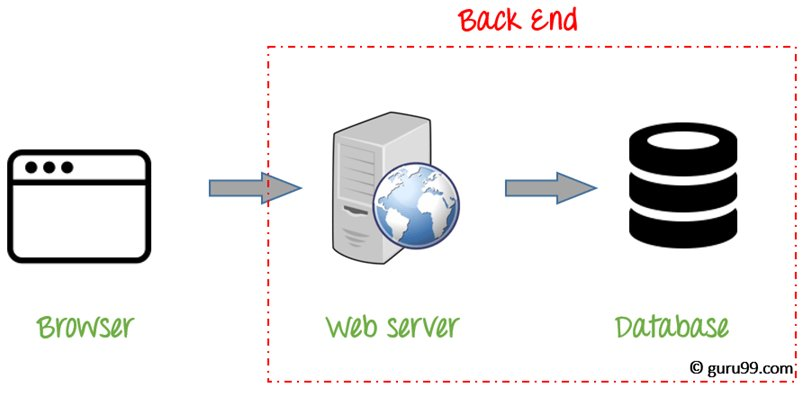
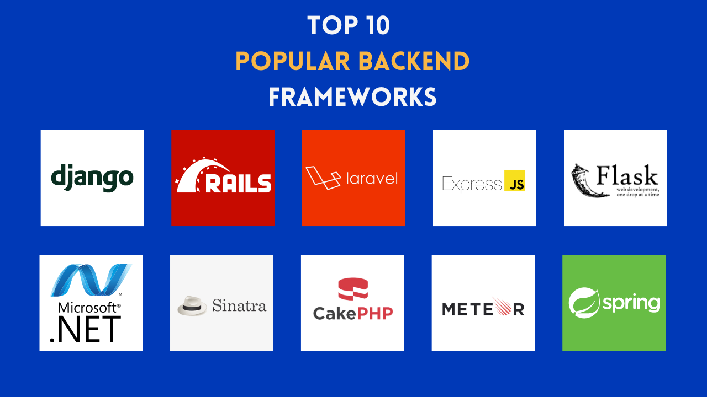

What is Back-End
Back-end Development refers to the server-side development. It focuses on databases, cripting, website architecture. It contains behind-the-scene activities that occur when performing any action on a website. It can be an account login or making a purchase from an online store. Code written by back-end developers helps browsers to communicate with database information.

What skills are required
- Programming Language:
- Backend engineer should know at least one server-side or Backend programming language like Java, Python, Ruby, . Net etc.
- Frameworks:
- Working experience of frameworks like Django for Python, Larval for PHP, etc
- Database:
- Knowledge of various DBMS technology is one of the important Backend developer skills. MySQL, MongoDB, Oracle, SQLServer, Redis are widely used for this purpose. Knowledge of caching mechanisms like varnish, Memcached, Redis is a plus.
- Server:
- Exposure to handling Apache, Nginx, IIS servers, Microsoft IIS is desirable. A good background in Linux helps tremendously in administering servers.
- API:
- Knowledge of web services or API is also important for full stack developers. Knowledge of creations and consumption of REST and SOAP services is desirable.

Roles & Responsibilities of Backend Developer
- The Back end developer job is to understand the goals of the website and come up with effective solutions
- Storing data and also ensuring that it is displayed to that user who are supposed to have access to it
- Responsible for developing Payment processing system like accepting data, securely storing that info, and making charges to that payment
- Manage APIs resources which work across devices
- He or she might be involved in the architecture of a system and Data science analyses.
- Developers are responsible to organize the logic of the system which runs across various devices
- Back end developer also needs to involved in building frameworks or the architecture to make it easier to program against.
- Back End web developer should have the skills for implementing algorithms and solving system related problems.
Summary
- Back end Development refers to the server-side development
- Back end developer skills include Development Languages, Database, cache, Server, and API (REST & SOAP), etc.
- The backend web developer should understand the goals of the website and come up with effective solutions
- The languages that a front-end developer should be familiar with are HTML, CSS, and JavaScript whereas Back End web developer should be familiar with the database, Server, API, etc.
- Front-end development service can't be offered independently but Backend web development service can be offered independently.